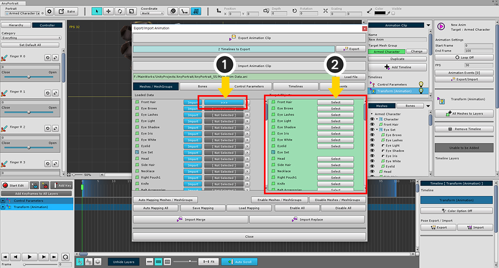
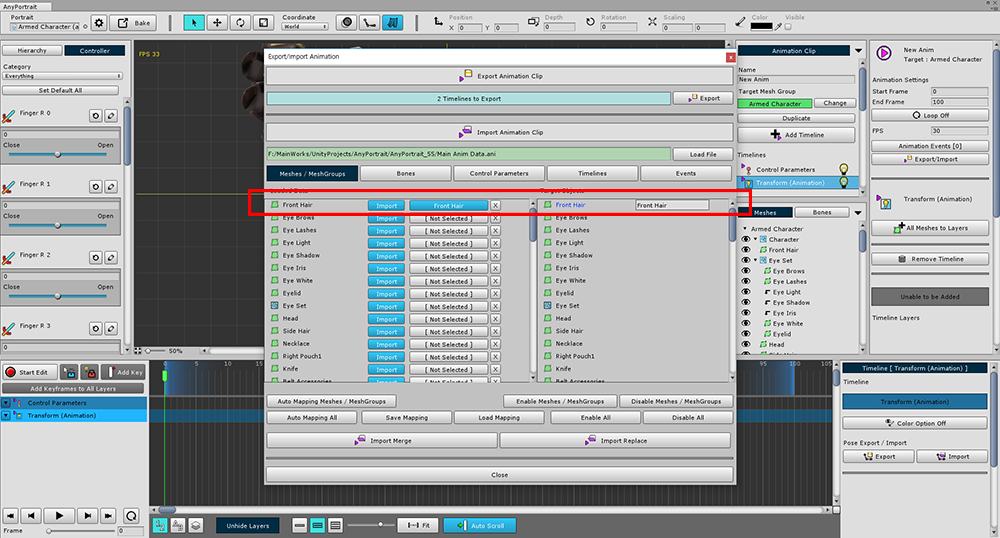
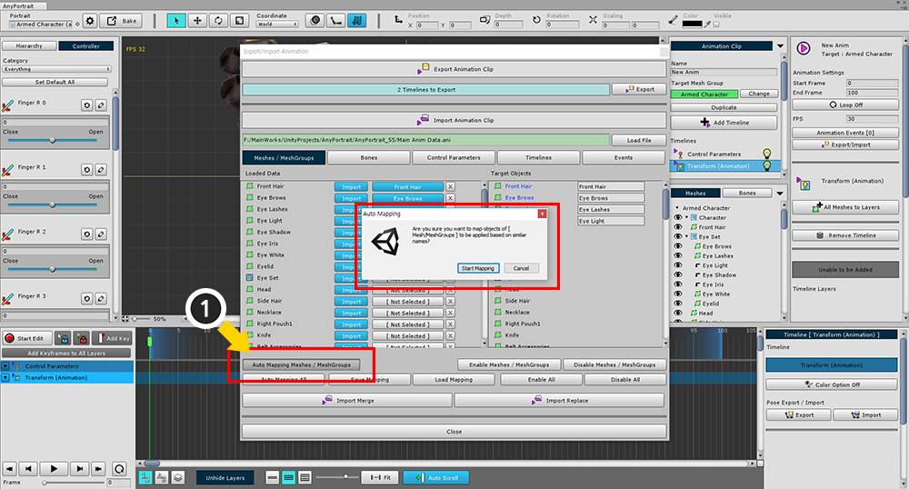
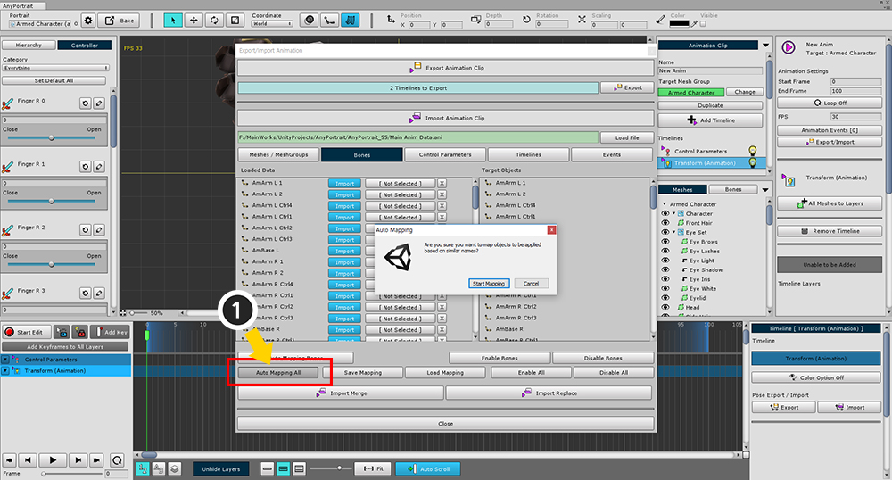
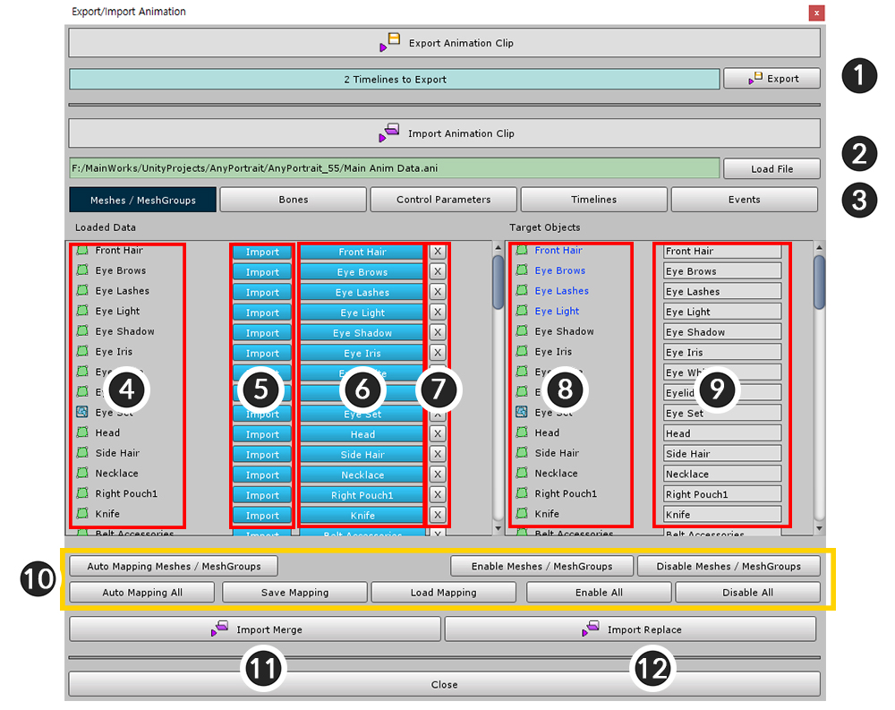
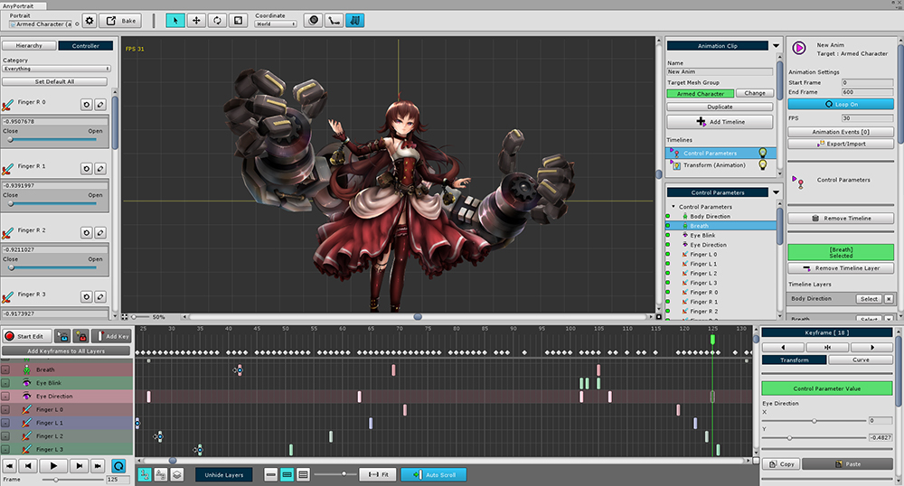

AnyPortrait > 메뉴얼 > 애니메이션을 파일로 내보내기/가져오기
애니메이션을 파일로 내보내기/가져오기
1.0.0

애니메이션을 만들고 그 데이터를 다른 캐릭터에 적용할 때가 있습니다.
다른 apPortrait에 적용하거나 다른 메시 그룹에 적용하는 등, 형태와 구조가 다른 캐릭터에도 적용할 수 있어야 합니다.
(1) 애니메이션에서 Export/Import 버튼을 누르면 애니메이션 정보를 내보내거나 가져올 수 있는 다이얼로그를 열 수 있습니다.
애니메이션을 파일로 내보내기

(1) Export 버튼을 누르고 파일을 저장할 수 있습니다.
파일로부터 애니메이션을 가져오기

애니메이션을 적용하기 위해 먼저 임시로 비어있는 애니메이션을 만들었습니다.
키프레임은 없으며 데이터가 전달될 타임라인만 추가합니다.

(1) Export/Import 버튼을 눌러서 다이얼로그를 엽니다.
(2) Load File 버튼을 눌러서 (3) 저장했던 애니메이션 파일을 엽니다.

저장된 애니메이션 정보가 하단에 나타납니다.
각각 메시/메시 그룹, 본, 컨트롤 파라미터, 타임라인, 애니메이션 이벤트 정보가 탭으로 구분됩니다.
이 상태로는 바로 가져올 수 없습니다.
"파일 정보" -> "파일 데이터가 적용될 대상"을 모든 탭에 대해서 연결(Mapping)해야합니다.

(1) 가져올 대상의 [Not Selected] 버튼을 누르면 위 화면처럼 오른쪽에 선택할 수 있는 대상이 활성화 됩니다.
(2) 데이터가 적용될 대상의 Select 버튼을 눌러서 연결을 완료합니다.

연결이 완료되었다면 위 화면처럼 양쪽의 이름이 나타납니다.

같은 방식으로 가져오고자 하는 데이터와 적용될 대상을 연결하는 작업을 반복해야합니다.
하지만 애니메이션이 복잡하고 데이터와 객체가 많다면 위 과정은 많은 시간을 요구할 수 있습니다.
따라서 빠르게 일괄적으로 연결하는 기능을 사용하는 것이 편리합니다.

(1) Auto Mapping Meshes/MeshGroups (또는 현재 탭의 이름) 버튼을 누르면 현재 탭에서 일괄적으로 연결할 수 있습니다.
이름을 기준으로 가장 유사한 순서대로 자동으로 연결하는 방식입니다.

이름에 맞게 자동으로 모두 연결되었습니다.
현재 탭인 메시와 메시그룹에 대해서만 연결이 완료된 상태입니다.

(1) Auto Mapping All 버튼을 누르면 모든 탭에 대해서 자동으로 연결을 시도합니다.
이 기능은 항상 올바른 연결을 보장하는 것은 아니므로 신중히 확인하고 사용하시는 것을 권장합니다.

자동화된 기능이 있어도 파일과 적용되는 대상을 연결하는 작업을 매번 할 수는 없는 법입니다.
이러한 연결 작업 자체를 파일로 저장해서 작업을 효율적으로 할 수 있습니다.
(1) Save Mapping 버튼을 눌러서 연결 정보를 저장할 수 있습니다.
저장된 연결 정보를 사용하기 위해서는 Load Mapping 버튼을 누르면 됩니다.

구조가 다르거나 필요가 없다면 모든 데이터를 가져오지 않을 수 있습니다.
(1) Import 버튼을 눌러서 비활성화 하면 해당 데이터는 가져오지 않습니다.
(연결되지 않은 데이터도 가져오지 않습니다.)

위 작업을 요약하여 애니메이션 내보내기/가져오기 화면을 설명하면 다음과 같습니다.
1. Export : 애니메이션 정보를 파일로 내보냅니다.
2. Load File : 애니메이션 정보를 파일로 가져오기 위해 파일을 엽니다.
3. Meshes/MeshGroups, Bones, Control Parameters, Timelines, Events : 파일과 대상이 연결되는 과정에서 각 종류에 대해 탭으로 구분합니다.
4. 파일 항목의 이름 : 파일로 저장된 데이터의 각 항목 이름입니다. 종류에 맞게 아이콘이 표시됩니다.
5. 파일 항목의 Import 버튼 : 파일로 저장된 항목을 가져오기에 포함할지 여부를 정합니다.
6. 파일 항목과 연결된 대상 : 파일의 데이터가 적용될 대상입니다. 버튼을 누르면 연결 작업이 시작됩니다.
7. 연결 해제 버튼 : 파일과 데이터의 연결을 해제합니다.
8. 적용될 대상 이름 : 현재 열려있는 애니메이션과 메시 그룹에 존재하는 객체입니다.
9. 연결된 파일의 항목 이름 : 왼쪽 화면과 마찬가지로 연결된 경우 해당 항목의 이름이 나타납니다.
10. 일괄 처리 기능들입니다.
Auto Mapping (All) : 이름을 기준으로 자동으로 연결을 합니다.
Save Mapping / Load Mapping : 연결 정보를 파일로 저장하거나 엽니다.
Enable / Disable (All) : 모든 대상의 가져오기 설정을 활성화 하거나 비활성화 합니다.
11. Import Merge : 파일의 데이터를 애니메이션으로 가져옵니다. 기존 데이터와 충돌시 가져오지 않고 유지합니다.
12. Import Replace : 파일의 데이터를 애니메이션으로 가져옵니다. 기존 데이터와 충돌시 덮어씌웁니다.

모든 작업이 끝났다면 Import Merge나 Import Replace 버튼을 눌러서 적용합니다.
기존 데이터를 유지한다면 Merge, 덮어 씌운다면 Replace를 누르면 됩니다.

애니메이션 데이터가 성공적으로 적용된 것을 확인할 수 있습니다.